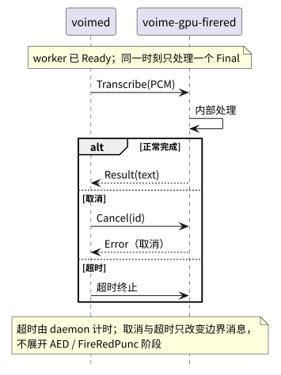

根：README USER CORE PROVIDER ｜ 本组件：README CORE PROVIDER
本文定义 voime-gpu-firered 与 voimed 之间的 Final 边界、模型目录、
runtime 构建选择、错误回退与安装入口。帧格式、请求 / 响应字段与错误码定义由
voime-gpu-common USER 拥有；本文只链接，不复制。
模型张量与 ORT GPU 契约见 PROVIDER，内部实现见 CORE。
| 术语 | 定义 |
|---|---|
| worker | voime-gpu-firered 进程；只提供 FireRed Final，不加载 VAD、Preview 或平台前端。 |
| Final 请求（Transcribe） | daemon 把一次完整语音段交给 worker 的请求；一次请求一个段，上一段未返回前不发送下一段。请求字段见 voime-gpu-common USER §4.2。 |
| 语音段 PCM | 完整语音段的 16 kHz、单声道、f32 样本，范围 [-1, 1]；单段上限 30 s，超过由核心分段器切分。不是活动段增量，也不是 Partial。 |
| 已加标点文本 | FireRedASR2-AED 识别文本经 FireRedPunc 二次推理插入标点后的结果；作为 Final 文本返回，不再做润色、纠错或大小写改写。 |
| AED | FireRedASR2-AED，1.15B 参数的 attention encoder-decoder；本组件使用上游 FP32 ONNX。 |
| greedy 解码 | 每一步取 decoder logits 的 argmax；不使用 beam search。参考配置中的 beam 参数不进入产品路径。 |
<sos> / <eos> | AED 的起始 / 结束特殊 token；id 分别为 3 / 4。解码从 <sos> 开始，遇到 <eos> 停止。 |
| FireRedPunc | 基于 BERT / LERT 的 5 类标点 token 分类模型；在 worker 内对 AED 文本做二次推理。 |
| 标点标签 | <space>（不插入）、，、。、？、！；标签表由 out_dict 与 punc.json 固定。 |
| runtime / EP | ONNX Runtime GPU runtime 与 Execution Provider；FireRed 使用 CUDA、MIGraphX 或 DirectML 之一。 |
| 加载 | 校验两个模型目录的 manifest / SHA-256，加载 ORT GPU runtime，创建 AED encoder、decoder 与 FireRedPunc 会话；完成后才进入 Ready。 |
| 后端不可用 | worker 无法完成加载或运行；daemon 把 firered 标记为不可用，当前段回退 CPU SenseVoice，doctor 报原因。 |
| CPU 回退 | daemon 在 GPU 失败时对当前段调用核心 CPU SenseVoice；这是 daemon 的产品级兜底，不是 worker 的推理路径。 |
| 空文本 | text.trim().is_empty()；worker 返回空文本，daemon 按空段丢弃，不提交。 |
| 取消 / 超时 | daemon 在等待 Final 时发送 Cancel，或超过预算后终止 worker；取消、超时与退出语义见 voime-gpu-common USER §4.7。 |
| 约定 | 内容 |
|---|---|
| 输入完整 | 只接受完整语音段 PCM；不接收活动段增量、VAD 状态、Partial 或前端 IPC。 |
| 单请求 | 同一 worker 一次只处理一个 Final；daemon 在收到 Result 或 Error 前不发送下一段。 |
| AED greedy | decoder 每步 argmax；从 <sos> 开始，到 <eos> 停止；不使用 CTC head 作为产品路径。 |
| 二次标点 | FireRedPunc 在 AED 文本上二次推理；标点在 worker 内插入，返回的文本已经是最终文本。 |
| 输出 | 成功返回已加标点文本与耗时；字段形状见 voime-gpu-common USER §4.3。空文本按空段处理。 |
| 错误码 | 错误码只在 voime-gpu-common USER §4.5 定义；worker 只映射自己的触发条件，不新增后端私有码。 |
| 无 CPU 回退 | worker 不调用 CPU ORT、不加载 SenseVoice、不执行 CPU FireRedASR2-AED；失败只报告错误。 |
| 无 runtime 切换 | 运行期不切换 EP / runtime，不回退到另一个 EP，也不重新加载 int8 / FP16 模型。 |
| 精度固定 | 两个模型均为 FP32 ONNX；不做量化回退，不静默降低精度。 |
| 模型只读 | 两个模型目录运行期只读；worker 不写 manifest、不下载、不改写权重。 |
| 协议单源 | 帧布局、请求 / 响应字段、超时与取消语义只在 voime-gpu-common USER 定义；本文不复制字段表。 |
| 日志与隐私 | stdout 只承载协议帧；日志走 stderr。日志只记录长度、耗时、错误码与后端名，不记录识别文本。 |
| 模型常驻 | 模型在 worker 启动时加载并常驻；每个 Final 只重置解码状态，不重新加载权重。 |
cpu、显式切换、切换需重启 daemon”见 根 USER §2；本组件不读取 final.backend。Transcribe 时工作；空闲时不产生 Partial、不写历史。
Ready 后接受 Transcribe；图中只画一个 Final 请求，字段见 voime-gpu-common USER §4.2。内部处理 self-loop 表示；AED、FireRedPunc 的阶段不在本图展开，见 CORE §5.2。Cancel，worker 以 Error 结束该请求；超时由 daemon 计时并终止 worker。两者都只画边界消息，不画 worker 内部状态。Ready 与关闭 Shutdown / Bye 见 voime-gpu-common USER §3。Result / Error 时 daemon 不发下一段。
两个模型目录位于模型根目录下，默认是 $XDG_DATA_HOME/voime/models（未设置时
~/.local/share/voime/models）；Windows 优先使用 %LOCALAPPDATA%\voime\models。
目录名是稳定标识，版本写在 manifest.json，不把版本号拼进目录名。
| 目录 | kind | 文件 | 体积 / 精度 |
|---|---|---|---|
fireredasr2-aed/ |
asr |
manifest.jsonencoder.onnxencoder.datactc.onnxdecoder.onnxdecoder.datadict.txttrain_bpe1000.modelcmvn.arkconfig.json |
约 4.7 GB · FP32 |
fireredpunc/ |
punc |
manifest.jsonmodel.onnxtokens.txtout_dictpunc.json |
约 0.4 GB · FP32 |
| 项目 | FireRed 固定值 |
|---|---|
id / kind | fireredasr2-aed 为 asr；fireredpunc 为 punc。 |
runtime | firered / onnx / fp32；max_segment_ms = 30000，超过 30 s 的语音由核心分段器继续切分。 |
ctc.onnx 是上游模型目录的一部分，参与文件校验，但 worker 不创建 CTC 会话，也不把 CTC head 作为产品路径。Hello 接收 model_dir 与 device；默认根目录由 daemon / 安装脚本决定，worker 不自行猜测路径。| 平台 / 硬件 | 编译时选择的 runtime | EP | 说明 |
|---|---|---|---|
| Linux + NVIDIA | ORT CUDA | CUDA Execution Provider | 需要匹配的 NVIDIA 驱动与 CUDA 能力；由安装脚本准备 runtime。 |
| Linux + AMD | ORT MIGraphX | MIGraphX Execution Provider | AMD Linux 的验收基线；依赖 MIGraphX / ROCm 能力。 |
| Windows + NVIDIA | ORT CUDA | CUDA Execution Provider | 与 Linux 分开打包。 |
| Windows + AMD / Intel | ORT DirectML | DirectML Execution Provider | DirectML 只随 Windows FireRed 包提供。 |
| 无 GPU / 驱动不匹配 | — | — | 不启动 worker；firered 后端不可用，Final 回退 CPU。 |
| 项目 | 契约 |
|---|---|
| 构建时选择 | EP 在编译 worker 时由 feature 固定；安装脚本的 --firered-runtime cuda|migraphx|directml 只选择对应的预编译 worker / runtime 包，不是运行期开关。 |
| 运行期 | worker 只使用编译时选定的 EP；不切换、不探测第二个 EP、不回退到 CPU ORT 或另一个 EP。 |
| 可用性 | EP 或设备不可用时返回 runtime_missing / device_unavailable；daemon 标记后端不可用并回退 CPU。 |
| 版本契约 | api-29 与 load-dynamic 的细节见 PROVIDER §4.3；运行期不安装、不编译、不下载 runtime。 |
| 隔离 | FireRed runtime 与 Qwen runtime 分目录；本 worker 不加载 Qwen 的 llama.cpp / GGML 库。 |
voime doctor 只报告后端 ready / running 与不可用原因，不加载模型。错误码的定义、线值与通用动作见 voime-gpu-common USER §4.5； 本表只列 FireRed worker 的触发条件与 daemon 的产品级动作。线值为 snake_case，枚举名见 common §4.4。
| 错误码 | FireRed worker 的触发条件 | daemon 动作 |
|---|---|---|
runtime_missing | ORT GPU runtime 缺失、无法动态加载或 API 版本不匹配。 | 标记 firered 不可用；当前段回退 CPU SenseVoice；提示重装 GPU 模块。 |
device_unavailable | 无可用 GPU、驱动不匹配、显存不足，或目标 EP 未注册。 | 不启动 / 停止 worker；标记后端不可用；当前段回退 CPU。 |
load_failed | manifest 缺失、schema / id / kind 不符、文件缺失、SHA-256 或大小不符、张量 / 会话创建失败。 | 标记后端不可用；当前段回退 CPU；记录模型路径与 SHA 前缀。 |
inference_failed | 运行期推理失败、输出张量形状异常或文本无法还原。 | 当前段回退 CPU；按崩溃路径重启 worker；连续失败标记后端不可用。 |
timeout | daemon 的加载或识别预算耗尽；worker 被终止。 | 杀 worker；当前段回退 CPU；按崩溃路径重启。 |
| 场景 | 行为 |
|---|---|
| worker 启动失败 / 加载失败 | daemon 以 CPU Final 启动或继续运行；firered 标记不可用，不阻塞核心。 |
| 当前段推理失败 / 超时 / 崩溃 | 当前段由 daemon 回退 CPU SenseVoice；Preview 不中断。 |
| 连续失败 | 按 daemon 的重启退避处理；仍失败则标记后端不可用，后续段直接走 CPU。 |
| 空文本 | worker 返回空文本；daemon 按空段丢弃，不提交。 |
| worker 自身 | 不加载 CPU ORT、不调用 SenseVoice、不切换 EP、不换 int8 / FP16；只返回错误。 |
protocol_mismatch 在握手阶段由 daemon 判定，不进入 Transcribe；定义见 common。Cancel 后收到的 inference_failed 只用于释放请求槽，不对该段执行 CPU 回退；语义见 voime-gpu-common USER §4.7。scripts/install-gpu.sh --firered
scripts/install-gpu.sh --firered --firered-runtime cuda
scripts/install-gpu.sh --firered --firered-runtime migraphx
scripts/install-gpu.sh --firered --backend firered
scripts/install-gpu.sh --firered --uninstall
scripts/install-gpu.ps1 --firered --firered-runtime cuda
scripts/install-gpu.ps1 --firered --firered-runtime directml| 选项 | 行为 |
|---|---|
--firered | 只安装 FireRed worker、FireRedASR2-AED、FireRedPunc 与 ORT GPU runtime；不安装 Qwen。 |
--firered-runtime cuda|migraphx|directml | 选择预编译的 FireRed worker / runtime 变体；EP 在编译时固定，不在运行期切换。Linux AMD 使用 MIGraphX，Linux / Windows NVIDIA 使用 CUDA，Windows AMD / Intel 使用 DirectML；Linux 不提供 DirectML 包。 |
--backend firered | 安装后写入 final.backend = firered；必须与已安装后端一致；不加此选项时保持原值（默认 cpu）。 |
--no-models | 只安装 worker 与 runtime；模型目录由用户提供。 |
--model-dir <dir> | 覆盖模型根目录；仍按一模型一目录布局。 |
--source-dir <dir> | 离线模型 / runtime 源；按 <dir>/<model-id>/ 读取，不联网。 |
--yes / -Yes | 跳过模型下载确认与 token 提示；用于非交互安装。 |
--firered --uninstall | 只删除 FireRed worker、本后端 runtime 与 fireredasr2-aed / fireredpunc；不触碰核心与 Qwen。 |
--firered 只安装本后端。两者都不自动切换 final.backend。--source-dir 时默认从固定上游 revision 下载模型并缓存；fireredpunc 优先使用 ModelScope 同文件镜像，fireredasr2-aed 的固定 ONNX 导出目前只有 HF 同文件集，因此使用 Hugging Face。公开模型使用匿名直链，不需要账号；也可通过 MODELSCOPE_API_TOKEN / HF_TOKEN（及常见别名）提供 token，交互安装缺失时会提示输入，可回车跳过。开始前显示下载体积并要求确认，--yes / -Yes 跳过确认。安装脚本不从仓库根目录的 models/ 取模型。final.backend；必须用 --backend 或 voime ctl backend 显式选择，重启 daemon 生效。firered，下一次 daemon 启动按后端不可用处理，当前段回退 CPU；不删除核心模型或配置文件。